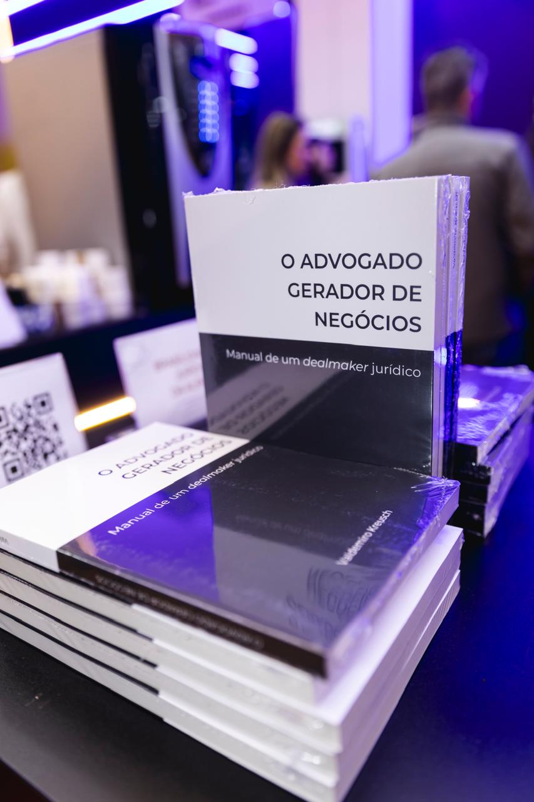

Adquira agora
Aponte a câmera para o QR Code para acessar a página de compra.
Valdemiro Kreusch
O guia completo de estratégia para escritórios jurídicos. Cartas diretas e provocadoras sobre gestão, liderança e posicionamento — para o advogado que quer transformar seu escritório em um negócio de verdade, com propósito e resultado.
Esgotado
Manual de um dealmaker jurídico. Como construir uma carteira de clientes sólida, gerar negócios de forma consistente e se posicionar como referência no mercado — com método, ética e estratégia aplicada à realidade do advogado brasileiro.
Adquirir →Liderança. Estratégia. Valor. Por que alguns advogados prosperam enquanto outros apenas sobrevivem? Um guia definitivo sobre liderança estratégica, Legal Operations e transformação digital para o advogado que quer operar no mais alto nível.
Adquirir →Adquira agora
Aponte a câmera para o QR Code para acessar a página de compra.